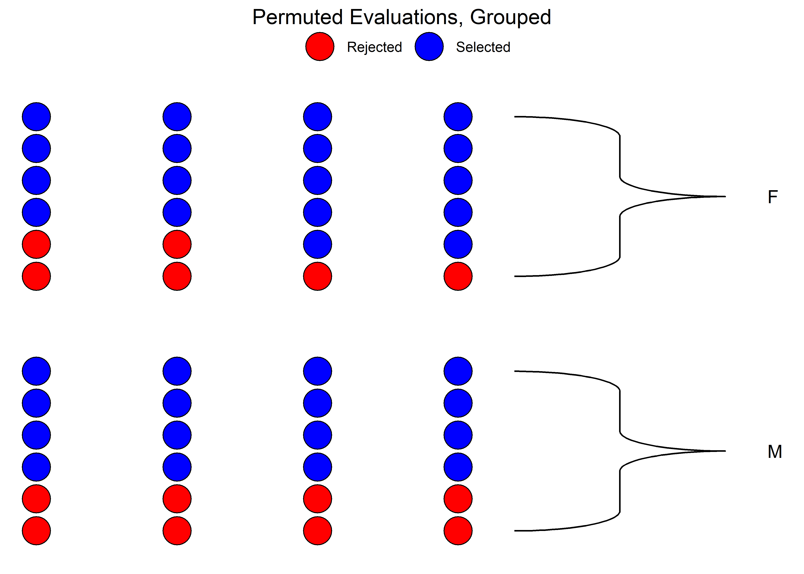
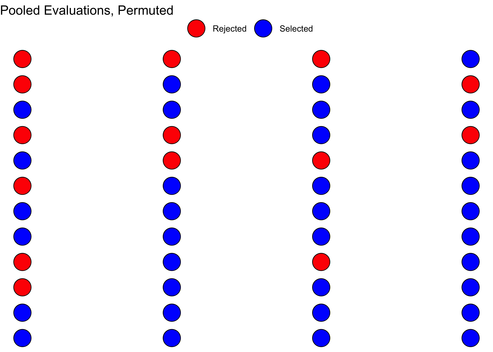

knitr::opts_chunk$set(echo = TRUE,message = TRUE,warning = TRUE, fig.align = "center")
options(digits=2)
library(tidyverse)
library(mosaic)
library(ggformula)
library(ggmosaic) # plotting mosaic plots for Categorical Data
library(vcd) # Creating Tables and plotting mosaic charts
## Datasets from Chihara and Hesterberg's book (Second Edition)
library(resampledata)
## Datasets from Cetinkaya-Rundel and Hardin's book (First Edition)
library(openintro)🃏 Testing a Single Proportion
Permutation
Monte Carlo Simulation
Random Number Generation
Distributions
Generating Parallel Worlds
Abstract
Inference Tests for the significance of a Proportion
We saw from the diagram created by Allen Downey that there is only one test! We will now use this philosophy to develop a technique that allows us to mechanize several Statistical Models in that way, with nearly identical code.
We will use two packages in R, mosaic to develop our intuition for what are called permutation based statistical tests. (There is also a more recent package called infer in R which can do pretty much all of this, including visualization. In my opinion, the code is a little too high-level and does not offer quite the detailed insight that the mosaic package does).
We will look visually at a permutation exercise. We will create dummy data that contains the following case study:
A set of identical resumes was sent to male and female evaluators. The candidates in the resumes were of both genders. We wish to see if there was difference in the way resumes were evaluated, by male and female evaluators. (We use just one male and one female evaluator here, to keep things simple!)
M
-0.3333333 
So, we have a solid disparity in percentage of selection between the two evaluators!
Now we pretend that there is no difference between the selections made by either set of evaluators. So we can just:
- Pool up all the evaluations
- Arbitrarily re-assign a given candidate(selected or rejected) to either of the two sets of evaluators, by permutation.
How would that pooled shuffled set of evaluations look like?


As can be seen, the ratio is different! We can now do this many many times, to check out our Hypothesis that there is no bias. We can plot the distribution of the differences in selection ratio and see how that artificially created distribution compares with mother-nature, the originally observed figure.
null_dist <- do(5000) * diff(mean(candidate ~ shuffle(evaluator),
data = data))
# null_dist %>% names()
null_dist %>% gf_histogram( ~ M,
fill = ~ (M <= obs_difference),
bins = 25,show.legend = FALSE,
xlab = "Bias Proportion",
ylab = "How Often?",
title = "Permutation Test on Diffence between Groups",
subtitle = "") %>%
gf_vline(xintercept = ~ obs_difference, color = "red" ) %>%
gf_label(500 ~ obs_difference, label = "Observed\n Bias",
show.legend = FALSE) %>%
gf_theme(theme_classic())
mean(~ M<= obs_difference, data = null_dist)
[1] 0.0146We see that the artificial data can hardly ever (\(p = 0.012\)) mimic what the real world experiment is showing. Hence we had good reason to reject our NULL Hypothesis that there is no bias.
Case Study #2: Weight vs Exercise in the YRBSS Survey
- OpenIntro Modern Statistics: Chapter 17
- Chihara and Hesterberg